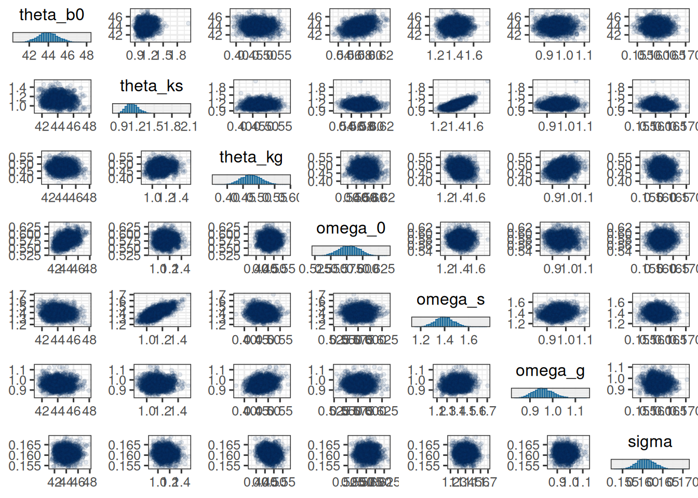
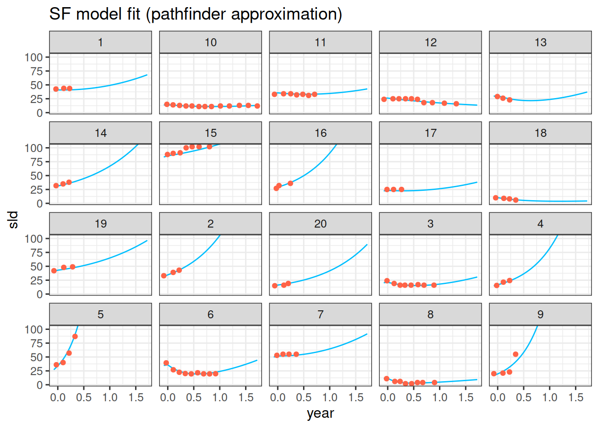

The purpose of this document is to show a minimal workflow for fitting a TGI model using the brms package.
Setup and load data
First we need to load the necessary packages and set some default options for the MCMC sampling. We also set the theme for the plots to theme_bw with a base size of 12.
Show the code
library(bayesplot)library(brms)library(ggplot2)library(gt)library(here)library(janitor)library(jmpost)library(modelr)library(posterior)library(readxl)library(rstan)library(tidybayes)library(tidyverse)library(truncnorm)if (require(cmdstanr)) {# If cmdstanr is available, instruct brms to use cmdstanr as backend # and cache all Stan binariesoptions(brms.backend ="cmdstanr", cmdstanr_write_stan_file_dir =here("_brms-cache"))dir.create(here("_brms-cache"), FALSE) # create cache directory if not yet available} else { rstan::rstan_options(auto_write =TRUE)}# MCMC optionsoptions(mc.cores =4)ITER <-1000# number of sampling iterations after warm upWARMUP <-2000# number of warm up iterationsCHAINS <-4BAYES.SEED <-878REFRESH <-500theme_set(theme_bw(base_size =12))
We also need a small function definition, which is still missing in brms:
We will use the publicly published tumor size data from the OAK study, see here. In particular we are using the S1 data set, which is the fully anonymized data set used in the publication. For simplicity, we have copied the data set in this GitHub repository.
We will make one more tweak here. If the time \(t\) is negative, i.e. the treatment has not started yet, then it is reasonable to assume that the tumor cannot shrink yet. Therefore, the final model for the mean SLD is:
Note that for consistency with the brms and Stan convention, here we denote the standard deviation as the second parameter of the normal distribution. So in this case, the variance would be \((y^{*}(t_{ij})\tau)^2\).
where \(\eta_{b_{0}i}\), \(\eta_{k_{s}i}\), \(\eta_{k_{g}i}\) are the standard normal distributed random effects.
This is important for two reasons:
This parametrization can help the sampler to converge faster. See here for more information.
This shows a bit more explicitly that the population mean of the random effects is not equal to the \(\mu\) parameter, but to \(\theta = \exp(\mu + \omega^2 / 2)\), because they are log-normally distributed (see e.g. Wikipedia for the formulas). This is important for the interpretation of the parameter estimates.
Priors
Finally, we need to define the priors for the hyperparameters.
There are different principles we could use to define these priors:
Non-informative priors: We could use priors that are as non-informative as possible. This is especially useful if we do not have any prior knowledge about the parameters. For example, we could use normal priors with a large standard deviation for the population means of the random effects.
Informative priors: If we have some prior knowledge about the parameters, we can use this to define the priors. For example, if we have literature data about the \(k_g\) parameter estimate, we could use this to define the prior for the population mean of the growth rate. (Here we just need to be careful to consider the time scale and the log-normal distribution, as mentioned above)
Here we use relatively informative priors for the log-normal location parameters, motivated by prior analyses of the same study:
where \(\text{PositiveNormal}(0, 3)\) denotes a truncated normal distribution with mean \(0\) and standard deviation \(3\), truncated to the positive real numbers.
Fit model
We can now fit the model using brms. The structure is determined by the model formula:
Show the code
formula <-bf(sld ~ ystar, nl =TRUE) +# Define the mean for the likelihood:nlf( ystar ~int_step(year >0) * (b0 * (exp(-ks * year) +exp(kg * year) -1)) +int_step(year <=0) * (b0 *exp(kg * year)) ) +# Define the standard deviation (called sigma in brms) as a # coefficient tau times the mean ystar.# sigma is modelled on the log scale though, therefore:nlf(sigma ~log(tau) +log(ystar)) +# This line is needed to declare tau as a model parameter:lf(tau ~1) +# Define nonlinear parameter transformations:nlf(b0 ~exp(lb0)) +nlf(ks ~exp(lks)) +nlf(kg ~exp(lkg)) +# Define random effect structure:lf(lb0 ~1+ (1| id)) +lf(lks ~1+ (1| id)) +lf(lkg ~1+ (1| id))# Define the priorspriors <-c(prior(normal(log(65), 1), nlpar ="lb0"),prior(normal(log(0.52), 0.1), nlpar ="lks"),prior(normal(log(1.04), 1), nlpar ="lkg"),prior(normal(0, 3), lb =0, nlpar ="lb0", class ="sd"),prior(normal(0, 3), lb =0, nlpar ="lks", class ="sd"),prior(normal(0, 3), lb =0, nlpar ="lkg", class ="sd"),prior(normal(0, 3), lb =0, nlpar ="tau"))# Initial values to avoid problems at the beginningn_patients <-nlevels(df$id)inits <-list(b_lb0 =array(3.61),b_lks =array(-1.25),b_lkg =array(-1.33),sd_1 =array(0.58),sd_2 =array(1.6),sd_3 =array(0.994),b_tau =array(0.161),z_1 =matrix(0, nrow =1, ncol = n_patients),z_2 =matrix(0, nrow =1, ncol = n_patients),z_3 =matrix(0, nrow =1, ncol = n_patients))# Fit the modelsave_file <-here("session-tgi/fit9.RData")if (file.exists(save_file)) {load(save_file)} else { fit <-brm(formula = formula,data = df,prior = priors,family =gaussian(),init =rep(list(inits), CHAINS),chains = CHAINS, iter = ITER + WARMUP, warmup = WARMUP, seed = BAYES.SEED,refresh = REFRESH )save(fit, file = save_file)}# Summarize the fitsummary(fit)
Family: gaussian
Links: mu = identity; sigma = log
Formula: sld ~ eta
eta ~ int_step(year > 0) * (b0 * (exp(-ks * year) + exp(kg * year) - 1)) + int_step(year <= 0) * (b0 * exp(kg * year))
sigma ~ log(tau) + log(eta)
tau ~ 1
b0 ~ exp(lb0)
ks ~ exp(lks)
kg ~ exp(lkg)
lb0 ~ 1 + (1 | id)
lks ~ 1 + (1 | id)
lkg ~ 1 + (1 | id)
Data: df (Number of observations: 4099)
Draws: 4 chains, each with iter = 3000; warmup = 2000; thin = 1;
total post-warmup draws = 4000
Multilevel Hyperparameters:
~id (Number of levels: 701)
Estimate Est.Error l-95% CI u-95% CI Rhat Bulk_ESS Tail_ESS
sd(lb0_Intercept) 0.58 0.02 0.55 0.61 1.00 689 1248
sd(lks_Intercept) 1.40 0.08 1.25 1.55 1.00 702 1586
sd(lkg_Intercept) 0.96 0.04 0.88 1.05 1.01 902 1750
Regression Coefficients:
Estimate Est.Error l-95% CI u-95% CI Rhat Bulk_ESS Tail_ESS
tau_Intercept 0.16 0.00 0.16 0.17 1.00 2250 2892
lb0_Intercept 3.62 0.02 3.57 3.66 1.01 420 723
lks_Intercept -0.86 0.08 -1.01 -0.72 1.00 1661 2415
lkg_Intercept -1.20 0.07 -1.34 -1.08 1.01 676 1419
Draws were sampled using sample(hmc). For each parameter, Bulk_ESS
and Tail_ESS are effective sample size measures, and Rhat is the potential
scale reduction factor on split chains (at convergence, Rhat = 1).
Note that it is crucial to use here int_step() to properly define the two pieces of the linear predictor for negative and non-negative time values: If you used step() like I did for a few days, then you will have the wrong model! This is because in Stan, step(false) = step(0) = 1 and not 0 as you would expect. Only int_step(0) = 0 as we need it here.
Parameter estimates
Here we extract all parameter estimates using the as_draws_df method for brmsfit objects. Note that we could also just extract a subset of parameters, see ?as_draws.brmsfit for more information.
As mentioned above, we use the expectation of the log-normal distribution to get the population level estimates (called \(\theta\) with the corresponding subscript) for the \(b_0\), \(k_s\), and \(k_g\) parameters. We also calculate the coefficient of variation for each parameter.
mcmc_pairs( post_df, pars = sf_pop_params,off_diag_args =list(size =1, alpha =0.1))

Next, we can create a nice summary table of the parameter estimates, using summarize_draws from the posterior package in combination with functions from the gt package:
Note that here we do not need to use the log-normal expectation formula, because we just calculate the individual random effects here, in contrast to the population level parameters above.
With this we can e.g. report the estimates for the first patient:
So with the posterior samples from above, we can calculate these statistics, separate for each patient, with the tumor-ratio e.g. for 12 weeks (and being careful with the year time scale we used in this model):
With brms it is straightforward to add covariates to the model. In this example, an obvious choice for a covariate is the treatment the patients received in the study:
Here it makes sense to assume that only the shrinkage and growth parameters differ systematically between the two arms. For example, the baseline SLD should be the same in expectation, because of the randomization between the treatment arms.
Therefore we can add this binary arm covariate as follows as a fixed effect for the two population level mean parameters \(\mu_{k_s}\) and \(\mu_{k_g}\) on the log scale:
Show the code
formula_by_arm <-bf(sld ~ ystar, nl =TRUE) +# Define the mean for the likelihood:nlf( ystar ~int_step(year >0) * (b0 * (exp(-ks * year) +exp(kg * year) -1)) +int_step(year <=0) * (b0 *exp(kg * year)) ) +# As above we also use these formulas here:nlf(sigma ~log(tau) +log(ystar)) +lf(tau ~1) +# Define nonlinear parameter transformations:nlf(b0 ~exp(lb0)) +nlf(ks ~exp(lks)) +nlf(kg ~exp(lkg)) +# Define random effect structure:lf(lb0 ~1+ (1| id)) +lf(lks ~1+ arm + (1| id)) +lf(lkg ~1+ arm + (1| id))
It is instructive to see that the Stan code that is generated in the background is actually identical to the previous model, except for the prior specification. This is because brms uses a design matrix to model the fixed effects, and the arm variable is just added to this design matrix, which before only contained the intercept column with 1s.
However, now the coefficient vector is no longer of length 1 but of length 2, with the first element corresponding to the intercept and the second element to the effect of the arm variable (for the level “2”). For the latter, we want to assume a standard normal prior on the log scale.
So we need to adjust the prior and initial values accordingly:
Warning: Dropping 'draws_df' class as required metadata was removed.
Show the code
post_sum_by_arm
variable
mean
median
sd
mad
q5
q95
rhat
ess_bulk
ess_tail
theta_b0
43.9
43.9
1.10
1.11
42.1
45.8
1.00
195
515
theta_ks_arm1
1.39
1.36
0.193
0.178
1.11
1.74
1.01
396
841
theta_ks_arm2
0.925
0.918
0.112
0.108
0.755
1.12
1.00
306
814
theta_kg_arm1
0.456
0.454
0.0461
0.0456
0.382
0.535
1.01
575
1,000
theta_kg_arm2
0.469
0.468
0.0425
0.0423
0.402
0.544
1.00
496
923
omega_0
0.578
0.578
0.0161
0.0160
0.552
0.605
1.00
345
979
omega_s
1.48
1.48
0.0909
0.0899
1.33
1.63
1.01
397
900
omega_g
0.968
0.965
0.0485
0.0474
0.892
1.05
1.00
343
808
cv_0
0.630
0.630
0.0206
0.0205
0.597
0.665
1.00
345
979
cv_s
2.84
2.79
0.445
0.416
2.21
3.65
1.01
397
900
cv_g
1.25
1.24
0.0976
0.0929
1.10
1.43
1.00
343
808
sigma
0.161
0.161
0.00229
0.00230
0.157
0.165
1.00
1,700
2,710
So we see that the shrinkage is stronger in arm 1 compared to arm 2, while the growth rates are similar. We could also calculate the posterior probability that the growth rate is different between the two arms, for example:
So we see that the posterior probability that the shrinkage rate is higher in arm 1 compared to arm 2 is quite high.
Model comparison with LOO
The LOO criterion is a widely used method for comparing models. It is based on the idea of leave-one-out cross-validation, but is more efficient to compute.
With brms, it is easy to compute the LOO criterion:
Show the code
loo(fit)
Warning: Found 374 observations with a pareto_k > 0.7 in model 'fit'. We
recommend to set 'moment_match = TRUE' in order to perform moment matching for
problematic observations.
Computed from 4000 by 4099 log-likelihood matrix.
Estimate SE
elpd_loo -12990.0 97.3
p_loo 1185.2 40.4
looic 25980.0 194.7
------
MCSE of elpd_loo is NA.
MCSE and ESS estimates assume MCMC draws (r_eff in [0.1, 2.2]).
Pareto k diagnostic values:
Count Pct. Min. ESS
(-Inf, 0.7] (good) 3725 90.9% 56
(0.7, 1] (bad) 303 7.4% <NA>
(1, Inf) (very bad) 71 1.7% <NA>
See help('pareto-k-diagnostic') for details.
A helpful glossary explaining the LOO statistics can be found here.
Different criteria are available, for example the elpd_loo is the expected log pointwise predictive density, and the looic = -2 * elpd_loo is the LOO information criterion. For comparing models, the looic is often used, where smaller numbers are better. it is kind of an equivalent to the AIC, but based on the LOO criterion.
Let’s e.g. compare the two models we fitted above, one for the whole dataset and one with the treatment arm as a covariate for the shrinkage and growth rates:
Show the code
fit <-add_criterion(fit, "loo")
Warning: Found 374 observations with a pareto_k > 0.7 in model 'fit'. We
recommend to set 'moment_match = TRUE' in order to perform moment matching for
problematic observations.
Show the code
fit_by_arm <-add_criterion(fit_by_arm, "loo")
Warning: Found 359 observations with a pareto_k > 0.7 in model 'fit_by_arm'. We
recommend to set 'moment_match = TRUE' in order to perform moment matching for
problematic observations.
Show the code
loo_compare(fit, fit_by_arm)
elpd_diff se_diff
fit 0.0 0.0
fit_by_arm -0.2 5.9
So the model without treatment arm seems to be very slightly preferred here by the LOO criterion. Nevertheless, the model with treatment arm might answer exactly the question we need to answer, so it is important to consider the context of the analysis.
Tips and tricks
When the model breaks down completely, that is a sign that likely the model specification is wrong. For example, in above code I first did not understand how to model the sigma parameter correctly, which led to a model where each chain was completely stuck at its initial values.
In that case and in general if you are not sure whether the brms model specification is correct, you can check the Stan code that is generated by brms:
Show the code
# Good to check the stan code:# (This also helps to find the names of the parameters# for which to define the initial values below)stancode(formula, prior = priors, data = df, family =gaussian())
// generated with brms 2.22.0
functions {
}
data {
int<lower=1> N; // total number of observations
vector[N] Y; // response variable
int<lower=1> K_tau; // number of population-level effects
matrix[N, K_tau] X_tau; // population-level design matrix
int<lower=1> K_lb0; // number of population-level effects
matrix[N, K_lb0] X_lb0; // population-level design matrix
int<lower=1> K_lks; // number of population-level effects
matrix[N, K_lks] X_lks; // population-level design matrix
int<lower=1> K_lkg; // number of population-level effects
matrix[N, K_lkg] X_lkg; // population-level design matrix
// covariates for non-linear functions
vector[N] C_ystar_1;
// data for group-level effects of ID 1
int<lower=1> N_1; // number of grouping levels
int<lower=1> M_1; // number of coefficients per level
array[N] int<lower=1> J_1; // grouping indicator per observation
// group-level predictor values
vector[N] Z_1_lb0_1;
// data for group-level effects of ID 2
int<lower=1> N_2; // number of grouping levels
int<lower=1> M_2; // number of coefficients per level
array[N] int<lower=1> J_2; // grouping indicator per observation
// group-level predictor values
vector[N] Z_2_lks_1;
// data for group-level effects of ID 3
int<lower=1> N_3; // number of grouping levels
int<lower=1> M_3; // number of coefficients per level
array[N] int<lower=1> J_3; // grouping indicator per observation
// group-level predictor values
vector[N] Z_3_lkg_1;
int prior_only; // should the likelihood be ignored?
}
transformed data {
}
parameters {
vector<lower=0>[K_tau] b_tau; // regression coefficients
vector[K_lb0] b_lb0; // regression coefficients
vector[K_lks] b_lks; // regression coefficients
vector[K_lkg] b_lkg; // regression coefficients
vector<lower=0>[M_1] sd_1; // group-level standard deviations
array[M_1] vector[N_1] z_1; // standardized group-level effects
vector<lower=0>[M_2] sd_2; // group-level standard deviations
array[M_2] vector[N_2] z_2; // standardized group-level effects
vector<lower=0>[M_3] sd_3; // group-level standard deviations
array[M_3] vector[N_3] z_3; // standardized group-level effects
}
transformed parameters {
vector[N_1] r_1_lb0_1; // actual group-level effects
vector[N_2] r_2_lks_1; // actual group-level effects
vector[N_3] r_3_lkg_1; // actual group-level effects
real lprior = 0; // prior contributions to the log posterior
r_1_lb0_1 = (sd_1[1] * (z_1[1]));
r_2_lks_1 = (sd_2[1] * (z_2[1]));
r_3_lkg_1 = (sd_3[1] * (z_3[1]));
lprior += normal_lpdf(b_tau | 0, 3)
- 1 * normal_lccdf(0 | 0, 3);
lprior += normal_lpdf(b_lb0 | log(65), 1);
lprior += normal_lpdf(b_lks | log(0.52), 0.1);
lprior += normal_lpdf(b_lkg | log(1.04), 1);
lprior += normal_lpdf(sd_1 | 0, 3)
- 1 * normal_lccdf(0 | 0, 3);
lprior += normal_lpdf(sd_2 | 0, 3)
- 1 * normal_lccdf(0 | 0, 3);
lprior += normal_lpdf(sd_3 | 0, 3)
- 1 * normal_lccdf(0 | 0, 3);
}
model {
// likelihood including constants
if (!prior_only) {
// initialize linear predictor term
vector[N] nlp_tau = rep_vector(0.0, N);
// initialize linear predictor term
vector[N] nlp_lb0 = rep_vector(0.0, N);
// initialize linear predictor term
vector[N] nlp_lks = rep_vector(0.0, N);
// initialize linear predictor term
vector[N] nlp_lkg = rep_vector(0.0, N);
// initialize non-linear predictor term
vector[N] nlp_b0;
// initialize non-linear predictor term
vector[N] nlp_ks;
// initialize non-linear predictor term
vector[N] nlp_kg;
// initialize non-linear predictor term
vector[N] nlp_ystar;
// initialize non-linear predictor term
vector[N] mu;
// initialize non-linear predictor term
vector[N] sigma;
nlp_tau += X_tau * b_tau;
nlp_lb0 += X_lb0 * b_lb0;
nlp_lks += X_lks * b_lks;
nlp_lkg += X_lkg * b_lkg;
for (n in 1:N) {
// add more terms to the linear predictor
nlp_lb0[n] += r_1_lb0_1[J_1[n]] * Z_1_lb0_1[n];
}
for (n in 1:N) {
// add more terms to the linear predictor
nlp_lks[n] += r_2_lks_1[J_2[n]] * Z_2_lks_1[n];
}
for (n in 1:N) {
// add more terms to the linear predictor
nlp_lkg[n] += r_3_lkg_1[J_3[n]] * Z_3_lkg_1[n];
}
for (n in 1:N) {
// compute non-linear predictor values
nlp_b0[n] = (exp(nlp_lb0[n]));
}
for (n in 1:N) {
// compute non-linear predictor values
nlp_ks[n] = (exp(nlp_lks[n]));
}
for (n in 1:N) {
// compute non-linear predictor values
nlp_kg[n] = (exp(nlp_lkg[n]));
}
for (n in 1:N) {
// compute non-linear predictor values
nlp_ystar[n] = (int_step(C_ystar_1[n] > 0) * (nlp_b0[n] * (exp( - nlp_ks[n] * C_ystar_1[n]) + exp(nlp_kg[n] * C_ystar_1[n]) - 1)) + int_step(C_ystar_1[n] <= 0) * (nlp_b0[n] * exp(nlp_kg[n] * C_ystar_1[n])));
}
for (n in 1:N) {
// compute non-linear predictor values
mu[n] = (nlp_ystar[n]);
}
for (n in 1:N) {
// compute non-linear predictor values
sigma[n] = exp(log(nlp_tau[n]) + log(nlp_ystar[n]));
}
target += normal_lpdf(Y | mu, sigma);
}
// priors including constants
target += lprior;
target += std_normal_lpdf(z_1[1]);
target += std_normal_lpdf(z_2[1]);
target += std_normal_lpdf(z_3[1]);
}
generated quantities {
}
Here e.g. it is important to see that the sigma parameter is modelled on the log scale.
We can also extract the actual data that is passed to the Stan program:
Show the code
# Extract the data that is passed to the Stan programstan_data <-standata(formula, prior = priors, data = df, family =gaussian())# Check that the time variable is correctall(stan_data$C_eta_1 == df$year)
[1] TRUE
This can be useful to check if the data is passed correctly to the Stan program.
It is important to take divergence warnings seriously. For the model parameters where Rhat is larger than 1.05 or so, you can just have a look at the traceplot. For example, in an earlier model fit the \(\log(\mu_{\phi})\) population parameter had this traceplot:
Show the code
fit_save <- fitload(here("session-tgi/fit.RData"))plot(fit, pars ="b_tphi")
Warning: Argument 'pars' is deprecated. Please use 'variable' instead.
Show the code
fit <- fit_save
We see that two chains led to a \(\log(\mu_{\phi})\) value below 0, while two chains hovered around much larger values between 5 and 15, which corresponds to \(\mu_{\phi} = 1\). This shows that the model is rather overparametrized. By restricting the range of the prior for \(\log(\mu_{\phi})\) to be below 0, we could avoid this problem.
Providing manually realistic initial values for the model parameters can help to speed up the convergence of the Markov chains. This is especially important for the nonlinear parameters. You can get the names of the parameters from the Stan code above - note that you cannot use the names of the brms R code.
Sometimes it is not easy to get the dimensions of the inital values right. Here it can be helpful to change the backend to rstan, which provides more detailed error messages. You can do this by setting backend = "rstan" in the brm call.
When the Stan compiler gives you an error, that can be very informative: Just open the Stan code file that is mentioned in the error message and look at the line number that is mentioned. This can give you a good idea of what went wrong: Maybe a typo in the prior definition, or a missing semicolon, or a wrong dimension in the data block. With VScode e.g. this is very easy: Just hold Ctrl and click on the file name and number, and you will be taken to the right line in the Stan code.
In order to quickly get results for a model, e.g. for obtaining useful starting values or prior distributions, it can be worth trying the “Pathfinder” algorithm in brms. Pathfinder is a variational method for approximately sampling from differentiable log densities. You can use it by setting algorithm = "pathfinder" in the brm call. In this example it takes only a minute, compared to more than an hour for the full model fit. However, the results are still quite different, so it is likely only useful as a first approximation. Nevertheless, the individual model fits look quite encouraging, in the sense that they have found good parameter values - but they are still lacking any uncertainty, so could not be used for confidence or prediction intervals:
Family: gaussian
Links: mu = identity; sigma = log
Formula: sld ~ ystar
ystar ~ int_step(year > 0) * (b0 * (exp(-ks * year) + exp(kg * year) - 1)) + int_step(year <= 0) * (b0 * exp(kg * year))
sigma ~ log(tau) + log(ystar)
tau ~ 1
b0 ~ exp(lb0)
ks ~ exp(lks)
kg ~ exp(lkg)
lb0 ~ 1 + (1 | id)
lks ~ 1 + (1 | id)
lkg ~ 1 + (1 | id)
Data: df (Number of observations: 4099)
Draws: 1 chains, each with iter = 1000; warmup = 0; thin = 1;
total post-warmup draws = 1000
Multilevel Hyperparameters:
~id (Number of levels: 701)
Estimate Est.Error l-95% CI u-95% CI Rhat Bulk_ESS Tail_ESS
sd(lb0_Intercept) 3.37 0.00 3.37 3.37 NA NA NA
sd(lks_Intercept) 9.16 0.00 9.16 9.16 NA NA NA
sd(lkg_Intercept) 6.90 0.00 6.90 6.90 NA NA NA
Regression Coefficients:
Estimate Est.Error l-95% CI u-95% CI Rhat Bulk_ESS Tail_ESS
tau_Intercept 0.13 0.00 0.13 0.13 NA NA NA
lb0_Intercept 3.62 0.00 3.62 3.62 NA NA NA
lks_Intercept -0.49 0.00 -0.49 -0.49 NA NA NA
lkg_Intercept -0.66 0.00 -0.66 -0.66 NA NA NA
Draws were sampled using pathfinder().
Show the code
df_sim <- df_subset |>data_grid(id = pt_subset, year =seq_range(year, 101) ) |>add_linpred_draws(fit_fast) |>median_qi() |>mutate(sld_pred = .linpred)df_sim |>ggplot(aes(x = year, y = sld)) +facet_wrap(~ id) +geom_ribbon(aes(y = sld_pred, ymin = .lower, ymax = .upper),alpha =0.3, fill ="deepskyblue" ) +geom_line(aes(y = sld_pred), color ="deepskyblue") +geom_point(data = df_subset, color ="tomato") +coord_cartesian(ylim =range(df_subset$sld)) +scale_fill_brewer(palette ="Greys") +labs(title ="SF model fit (pathfinder approximation)")

Source Code
---title: "1. TGI model minimal workflow with `brms`"author: - Daniel Sabanés Bové - Francois Mercierdate: last-modifiededitor_options: chunk_output_type: inlineformat: html: code-fold: show html-math-method: mathjaxcache: true---The purpose of this document is to show a minimal workflow for fitting a TGI model using the `brms` package.## Setup and load data{{< include _setup_and_load.qmd >}}{{< include _load_data.qmd >}}## Stein-Fojo modelWe start from the Stein-Fojo model as shown in the slides:$$y^{*}(t_{ij}) = \psi_{b_{0}i} \{\exp(- \psi_{k_{s}i} \cdot t_{ij}) + \exp(\psi_{k_{g}i} \cdot t_{ij}) - 1\}$$### MeanWe will make one more tweak here. If the time $t$ is negative, i.e. the treatment has not started yet, then it is reasonable to assume that the tumor cannot shrink yet. Therefore, the final model for the mean SLD is:$$y^{*}(t_{ij}) = \begin{cases} \psi_{b_{0}i} \exp(\psi_{k_{g}i} \cdot t_{ij}) & \text{if } t_{ij} < 0 \\\psi_{b_{0}i} \{\exp(-\psi_{k_{s}i} \cdot t_{ij}) + \exp(\psi_{k_{g}i} \cdot t_{ij}) - 1\} & \text{if } t_{ij} \geq 0 \end{cases}$$### LikelihoodFor the likelihood given the mean SLD $y^{*}$, we will assume a normal distribution with a constant coefficient of variation $\tau$:$$y(t_{ij}) \sim \text{N}(y^{*}(t_{ij}), y^{*}(t_{ij})\tau)$$Note that for consistency with the `brms` and `Stan` convention, here we denote the standard deviation as the second parameter of the normal distribution. So in this case, the variance would be $(y^{*}(t_{ij})\tau)^2$.This can also be written as:$$y(t_{ij}) = (1 + \epsilon_{ij}) \cdot y^{*}(t_{ij})$$where $\epsilon_{ij} \sim \text{N}(0, \tau)$.Note that also the additive model is a possible choice, where$$y(t_{ij}) = y^{*}(t_{ij}) + \epsilon_{ij}$$such that the error does not depend on the scale of the SLD any longer.### Random effectsNext, we define the distributions of the random effects $\psi_{b_{0}i}$, $\psi_{k_{s}i}$, $\psi_{k_{g}i}$, for $i = 1, \dotsc, n$:$$\begin{align*}\psi_{b_{0}i} &\sim \text{LogNormal}(\mu_{b_{0}}, \omega_{0}) \\\psi_{k_{s}i} &\sim \text{LogNormal}(\mu_{k_{s}}, \omega_{s}) \\\psi_{k_{g}i} &\sim \text{LogNormal}(\mu_{k_{g}}, \omega_{g})\end{align*}$$This can be rewritten as:$$\begin{align*}\psi_{b_{0}i} &= \exp(\mu_{b_{0}} + \omega_{0} \cdot \eta_{b_{0}i}) \\\psi_{k_{s}i} &= \exp(\mu_{k_{s}} + \omega_{s} \cdot \eta_{k_{s}i}) \\\psi_{k_{g}i} &= \exp(\mu_{k_{g}} + \omega_{g} \cdot \eta_{k_{g}i})\end{align*}$$where $\eta_{b_{0}i}$, $\eta_{k_{s}i}$, $\eta_{k_{g}i}$ are the standard normal distributed random effects.This is important for two reasons:1. This parametrization can help the sampler to converge faster. See [here](https://mc-stan.org/docs/stan-users-guide/efficiency-tuning.html#non-centered-parameterization) for more information.2. This shows a bit more explicitly that the population mean of the random effects is not equal to the $\mu$ parameter, but to $\theta = \exp(\mu + \omega^2 / 2)$, because they are log-normally distributed (see e.g. [Wikipedia](https://en.wikipedia.org/wiki/Log-normal_distribution#Arithmetic_moments) for the formulas). This is important for the interpretation of the parameter estimates.### PriorsFinally, we need to define the priors for the hyperparameters. There are different principles we could use to define these priors:1. **Non-informative priors**: We could use priors that are as non-informative as possible. This is especially useful if we do not have any prior knowledge about the parameters. For example, we could use normal priors with a large standard deviation for the population means of the random effects.2. **Informative priors**: If we have some prior knowledge about the parameters, we can use this to define the priors. For example, if we have literature data about the $k_g$ parameter estimate, we could use this to define the prior for the population mean of the growth rate. (Here we just need to be careful to consider the time scale and the log-normal distribution, as mentioned above)Here we use relatively informative priors for the log-normal location parameters, motivated by prior analyses of the same study:$$\begin{align*}\mu_{b_{0}} &\sim \text{Normal}(\log(65), 1) \\\mu_{k_{s}} &\sim \text{Normal}(\log(0.52), 0.1) \\\mu_{k_{g}} &\sim \text{Normal}(\log(1.04), 1)\end{align*}$$For all standard deviations we use truncated normal priors:$$\begin{align*}\omega_{0} &\sim \text{PositiveNormal}(0, 3) \\\omega_{s} &\sim \text{PositiveNormal}(0, 3) \\\omega_{g} &\sim \text{PositiveNormal}(0, 3) \\\tau &\sim \text{PositiveNormal}(0, 3)\end{align*}$$where $\text{PositiveNormal}(0, 3)$ denotes a truncated normal distribution with mean $0$ and standard deviation $3$, truncated to the positive real numbers.## Fit modelWe can now fit the model using `brms`. The structure is determined by the model formula:```{r}#| label: fit_brmsformula <-bf(sld ~ ystar, nl =TRUE) +# Define the mean for the likelihood:nlf( ystar ~int_step(year >0) * (b0 * (exp(-ks * year) +exp(kg * year) -1)) +int_step(year <=0) * (b0 *exp(kg * year)) ) +# Define the standard deviation (called sigma in brms) as a # coefficient tau times the mean ystar.# sigma is modelled on the log scale though, therefore:nlf(sigma ~log(tau) +log(ystar)) +# This line is needed to declare tau as a model parameter:lf(tau ~1) +# Define nonlinear parameter transformations:nlf(b0 ~exp(lb0)) +nlf(ks ~exp(lks)) +nlf(kg ~exp(lkg)) +# Define random effect structure:lf(lb0 ~1+ (1| id)) +lf(lks ~1+ (1| id)) +lf(lkg ~1+ (1| id))# Define the priorspriors <-c(prior(normal(log(65), 1), nlpar ="lb0"),prior(normal(log(0.52), 0.1), nlpar ="lks"),prior(normal(log(1.04), 1), nlpar ="lkg"),prior(normal(0, 3), lb =0, nlpar ="lb0", class ="sd"),prior(normal(0, 3), lb =0, nlpar ="lks", class ="sd"),prior(normal(0, 3), lb =0, nlpar ="lkg", class ="sd"),prior(normal(0, 3), lb =0, nlpar ="tau"))# Initial values to avoid problems at the beginningn_patients <-nlevels(df$id)inits <-list(b_lb0 =array(3.61),b_lks =array(-1.25),b_lkg =array(-1.33),sd_1 =array(0.58),sd_2 =array(1.6),sd_3 =array(0.994),b_tau =array(0.161),z_1 =matrix(0, nrow =1, ncol = n_patients),z_2 =matrix(0, nrow =1, ncol = n_patients),z_3 =matrix(0, nrow =1, ncol = n_patients))# Fit the modelsave_file <-here("session-tgi/fit9.RData")if (file.exists(save_file)) {load(save_file)} else { fit <-brm(formula = formula,data = df,prior = priors,family =gaussian(),init =rep(list(inits), CHAINS),chains = CHAINS, iter = ITER + WARMUP, warmup = WARMUP, seed = BAYES.SEED,refresh = REFRESH )save(fit, file = save_file)}# Summarize the fitsummary(fit)```Note that it is crucial to use here `int_step()` to properly define the two pieces of the linear predictor for negative and non-negative time values: If you used `step()` like I did for a few days, then you will have the wrong model! This is because in Stan, `step(false) = step(0) = 1` and not 0 as you would expect. Only `int_step(0) = 0` as we need it here. ## Parameter estimatesHere we extract all parameter estimates using the `as_draws_df` method for `brmsfit` objects. Note that we could also just extract a subset of parameters, see `?as_draws.brmsfit` for more information.As mentioned above, we use the expectation of the log-normal distribution to get the population level estimates (called $\theta$ with the corresponding subscript) for the $b_0$, $k_s$, and $k_g$ parameters. We also calculate the coefficient of variation for each parameter.```{r}#| label: extract_parameterspost_df <-as_draws_df(fit)head(names(post_df), 10)post_df <- post_df |>mutate(theta_b0 =exp(b_lb0_Intercept + sd_id__lb0_Intercept^2/2),theta_ks =exp(b_lks_Intercept + sd_id__lks_Intercept^2/2),theta_kg =exp(b_lkg_Intercept + sd_id__lkg_Intercept^2/2),omega_0 = sd_id__lb0_Intercept,omega_s = sd_id__lks_Intercept,omega_g = sd_id__lkg_Intercept,cv_0 =sqrt(exp(sd_id__lb0_Intercept^2) -1),cv_s =sqrt(exp(sd_id__lks_Intercept^2) -1),cv_g =sqrt(exp(sd_id__lkg_Intercept^2) -1),sigma = b_tau_Intercept )```For a graphical check of the convergence, we can use the `mcmc_trace` and `mcmc_pairs` functions from the `bayesplot` package:```{r}#| label: plot_convergencesf_pop_params <-c("theta_b0", "theta_ks", "theta_kg", "omega_0", "omega_s", "omega_g", "sigma")mcmc_trace(post_df, pars = sf_pop_params)mcmc_pairs( post_df, pars = sf_pop_params,off_diag_args =list(size =1, alpha =0.1))```Next, we can create a nice summary table of the parameter estimates, using `summarize_draws` from the `posterior` package in combination with functions from the `gt` package:```{r}#| label: summarize_parameterspost_sum <- post_df |>select(theta_b0, theta_ks, theta_kg, omega_0, omega_s, omega_g, cv_0, cv_s, cv_g, sigma) |>summarize_draws() |>gt() |>fmt_number(n_sigfig =3)post_sum```We can also look at parameters for individual patients. This is simplified by using the `spread_draws()` function:```{r}#| label: extract_individual_parameters# Understand the names of the random effects:head(get_variables(fit), 10)post_ind <- fit |>spread_draws( b_lb0_Intercept, r_id__lb0[id, ], b_lks_Intercept, r_id__lks[id, ], b_lkg_Intercept, r_id__lkg[id, ] ) |>mutate(b0 =exp(b_lb0_Intercept + r_id__lb0),ks =exp(b_lks_Intercept + r_id__lks),kg =exp(b_lkg_Intercept + r_id__lkg) ) |>select( .chain, .iteration, .draw, id, b0, ks, kg )```Note that here we do *not* need to use the log-normal expectation formula, because we just calculate the individual random effects here, in contrast to the population level parameters above.With this we can e.g. report the estimates for the first patient:```{r}#| label: first_patient_estimatespost_sum_id1 <- post_ind |>filter(id =="1") |>summarize_draws() |>gt() |>fmt_number(n_sigfig =3)post_sum_id1```## Observation vs model fitWe can now compare the model fit to the observations. Let's do this for the first 20 patients again.```{r}#| label: obs_vs_fit_plotspt_subset <-as.character(1:20)df_subset <- df |>filter(id %in% pt_subset)df_sim <- df_subset |>data_grid(id = pt_subset, year =seq_range(year, 101) ) |>add_linpred_draws(fit) |>median_qi() |>mutate(sld_pred = .linpred)df_sim |>ggplot(aes(x = year, y = sld)) +facet_wrap(~ id) +geom_ribbon(aes(y = sld_pred, ymin = .lower, ymax = .upper),alpha =0.3, fill ="deepskyblue" ) +geom_line(aes(y = sld_pred), color ="deepskyblue") +geom_point(data = df_subset, color ="tomato") +coord_cartesian(ylim =range(df_subset$sld)) +scale_fill_brewer(palette ="Greys") +labs(title ="SF model fit")```## Summary statisticsThe time-to-growth formula is:$$\max \left( \frac{ \log(k_s) - \log(k_g) }{ k_s + k_g }, 0\right)$$Similary, we can look at the tumor-ratio at time $t$:$$\frac{y^{*}(t)}{y^{*}(0)} = \exp(-k_s \cdot t) + \exp(k_g \cdot t) - 1$$So with the posterior samples from above, we can calculate these statistics, separate for each patient, with the tumor-ratio e.g. for 12 weeks (and being careful with the year time scale we used in this model):```{r}#| label: post_ind_statspost_ind_stat <- post_ind |>mutate(ttg =pmax((log(ks) -log(kg)) / (ks + kg), 0),tr12 =exp(-ks *12/52) +exp(kg *12/52) -1 )```Then we can look at e.g. the first 3 patients parameter estimates:```{r}#| label: post_ind_stat_sumpost_ind_stat_sum <- post_ind_stat |>filter(id %in%c("1", "2", "3")) |>summarize_draws() |>gt() |>fmt_number(n_sigfig =3)post_ind_stat_sum```## Adding covariatesWith `brms` it is straightforward to add covariates to the model. In this example, an obvious choice for a covariate is the treatment the patients received in the study:```{r}#| label: arms_distributiondf |>select(id, arm) |>distinct() |>pull(arm) |>table()```Here it makes sense to assume that only the shrinkage and growth parameters differ systematically between the two arms. For example, the baseline SLD should be the same in expectation, because of the randomization between the treatment arms.Therefore we can add this binary `arm` covariate as follows as a fixed effect for the two population level mean parameters $\mu_{k_s}$ and $\mu_{k_g}$ on the log scale:```{r}#| label: formula_covariatesformula_by_arm <-bf(sld ~ ystar, nl =TRUE) +# Define the mean for the likelihood:nlf( ystar ~int_step(year >0) * (b0 * (exp(-ks * year) +exp(kg * year) -1)) +int_step(year <=0) * (b0 *exp(kg * year)) ) +# As above we also use these formulas here:nlf(sigma ~log(tau) +log(ystar)) +lf(tau ~1) +# Define nonlinear parameter transformations:nlf(b0 ~exp(lb0)) +nlf(ks ~exp(lks)) +nlf(kg ~exp(lkg)) +# Define random effect structure:lf(lb0 ~1+ (1| id)) +lf(lks ~1+ arm + (1| id)) +lf(lkg ~1+ arm + (1| id))```It is instructive to see that the Stan code that is generated in the background is actually identical to the previous model, except for the prior specification. This is because `brms` uses a design matrix to model the fixed effects, and the `arm` variable is just added to this design matrix, which before only contained the intercept column with `1`s. However, now the coefficient vector is no longer of length 1 but of length 2, with the first element corresponding to the intercept and the second element to the effect of the `arm` variable (for the level "2"). For the latter, we want to assume a standard normal prior on the log scale. So we need to adjust the prior and initial values accordingly:```{r}#| label: priors_covariatespriors_by_arm <-c(prior(normal(log(65), 1), nlpar ="lb0"),# Note the changes here:prior(normal(log(0.52), 0.1), nlpar ="lks", coef ="Intercept"),prior(normal(0, 1), nlpar ="lks", coef ="arm2"), prior(normal(log(1.04), 1), nlpar ="lkg", coef ="Intercept"),prior(normal(0, 1), nlpar ="lkg", coef ="arm2"),# Same as before:prior(normal(0, 3), lb =0, nlpar ="lb0", class ="sd"),prior(normal(0, 3), lb =0, nlpar ="lks", class ="sd"),prior(normal(0, 3), lb =0, nlpar ="lkg", class ="sd"),prior(normal(0, 3), lb =0, nlpar ="tau"))inits_by_arm <-list(b_lb0 =array(3.61),# Note the changes here:b_lks =array(c(-1.25, 0)),b_lkg =array(c(-1.33, 0)),# Same as before:sd_1 =array(0.58),sd_2 =array(1.6),sd_3 =array(0.994),b_tau =array(0.161),z_1 =matrix(0, nrow =1, ncol = n_patients),z_2 =matrix(0, nrow =1, ncol = n_patients),z_3 =matrix(0, nrow =1, ncol = n_patients))```Now we can fit the model as before:```{r}#| label: fit_brms_by_armsave_file <-here("session-tgi/fit10.RData")if (file.exists(save_file)) {load(save_file)} else { fit_by_arm <-brm(formula = formula_by_arm,data = df,prior = priors_by_arm,family =gaussian(),init =rep(list(inits_by_arm), CHAINS),chains = CHAINS, iter = ITER + WARMUP, warmup = WARMUP, seed = BAYES.SEED,refresh = REFRESH )save(fit_by_arm, file = save_file)}summary(fit_by_arm)```Let's have a look at the parameter estimates then:```{r}#| label: extract_parameters_by_armpost_df_by_arm <-as_draws_df(fit_by_arm)head(names(post_df_by_arm), 10)post_df_by_arm <- post_df_by_arm |>mutate(theta_b0 =exp(b_lb0_Intercept + sd_id__lb0_Intercept^2/2),theta_ks_arm1 =exp(b_lks_Intercept + sd_id__lks_Intercept^2/2),theta_ks_arm2 =exp(b_lks_Intercept + b_lks_arm2 + sd_id__lks_Intercept^2/2),theta_kg_arm1 =exp(b_lkg_Intercept + sd_id__lkg_Intercept^2/2),theta_kg_arm2 =exp(b_lkg_Intercept + b_lkg_arm2 + sd_id__lkg_Intercept^2/2),omega_0 = sd_id__lb0_Intercept,omega_s = sd_id__lks_Intercept,omega_g = sd_id__lkg_Intercept,cv_0 =sqrt(exp(sd_id__lb0_Intercept^2) -1),cv_s =sqrt(exp(sd_id__lks_Intercept^2) -1),cv_g =sqrt(exp(sd_id__lkg_Intercept^2) -1),sigma = b_tau_Intercept )post_sum_by_arm <- post_df_by_arm |>select( theta_b0, theta_ks_arm1, theta_ks_arm2, theta_kg_arm1, theta_kg_arm2, omega_0, omega_s, omega_g, cv_0, cv_s, cv_g, sigma ) |>summarize_draws() |>gt() |>fmt_number(n_sigfig =3)post_sum_by_arm```So we see that the shrinkage is stronger in arm 1 compared to arm 2, while the growth rates are similar. We could also calculate the posterior probability that the growth rate is different between the two arms, for example:```{r}#| label: posterior_prob_diffpost_df_by_arm |>mutate(diff_pos = theta_ks_arm1 - theta_ks_arm2 >0) |>summarize(diff_prob =mean(diff_pos))```So we see that the posterior probability that the shrinkage rate is higher in arm 1 compared to arm 2 is quite high.## Model comparison with LOOThe LOO criterion is a widely used method for comparing models. It is based on the idea of leave-one-out cross-validation, but is more efficient to compute. With `brms`, it is easy to compute the LOO criterion:```{r}#| label: looloo(fit)```A helpful glossary explaining the LOO statistics can be found [here](https://mc-stan.org/cmdstanr/reference/loo-glossary.html).Different criteria are available, for example the `elpd_loo` is the expected log pointwise predictive density, and the `looic = -2 * elpd_loo` is the LOO information criterion. For comparing models, the `looic` is often used, where smaller numbers are better. it is kind of an equivalent to the AIC, but based on the LOO criterion.Let's e.g. compare the two models we fitted above, one for the whole dataset and one with the treatment arm as a covariate for the shrinkage and growth rates:```{r}#| label: loo_comparefit <-add_criterion(fit, "loo")fit_by_arm <-add_criterion(fit_by_arm, "loo")loo_compare(fit, fit_by_arm)```So the model without treatment arm seems to be very slightly preferred here by the LOO criterion. Nevertheless, the model with treatment arm might answer exactly the question we need to answer, so it is important to consider the context of the analysis.## Tips and tricks- When the model breaks down completely, that is a sign that likely the model specification is wrong. For example, in above code I first did not understand how to model the `sigma` parameter correctly, which led to a model where each chain was completely stuck at its initial values.- In that case and in general if you are not sure whether the `brms` model specification is correct, you can check the Stan code that is generated by `brms`:```{r}#| label: check_stan_code# Good to check the stan code:# (This also helps to find the names of the parameters# for which to define the initial values below)stancode(formula, prior = priors, data = df, family =gaussian())``` Here e.g. it is important to see that the `sigma` parameter is modelled on the log scale.- We can also extract the actual data that is passed to the Stan program:```{r}#| label: extract_data# Extract the data that is passed to the Stan program stan_data <-standata(formula, prior = priors, data = df, family =gaussian())# Check that the time variable is correctall(stan_data$C_eta_1 == df$year)``` This can be useful to check if the data is passed correctly to the Stan program.- It is important to take divergence warnings seriously. For the model parameters where `Rhat` is larger than 1.05 or so, you can just have a look at the traceplot. For example, in an earlier model fit the $\log(\mu_{\phi})$ population parameter had this traceplot:```{r}#| label: traceplot_example fit_save <- fitload(here("session-tgi/fit.RData"))plot(fit, pars ="b_tphi") fit <- fit_save``` We see that two chains led to a $\log(\mu_{\phi})$ value below 0, while two chains hovered around much larger values between 5 and 15, which corresponds to $\mu_{\phi} = 1$. This shows that the model is rather overparametrized. By restricting the range of the prior for $\log(\mu_{\phi})$ to be below 0, we could avoid this problem.- Providing manually realistic initial values for the model parameters can help to speed up the convergence of the Markov chains. This is especially important for the nonlinear parameters. You can get the names of the parameters from the Stan code above - note that you cannot use the names of the `brms` R code. - Sometimes it is not easy to get the dimensions of the inital values right. Here it can be helpful to change the backend to `rstan`, which provides more detailed error messages. You can do this by setting `backend = "rstan"` in the `brm` call.- When the Stan compiler gives you an error, that can be very informative: Just open the Stan code file that is mentioned in the error message and look at the line number that is mentioned. This can give you a good idea of what went wrong: Maybe a typo in the prior definition, or a missing semicolon, or a wrong dimension in the data block. With VScode e.g. this is very easy: Just hold `Ctrl` and click on the file name and number, and you will be taken to the right line in the Stan code.- In order to quickly get results for a model, e.g. for obtaining useful starting values or prior distributions, it can be worth trying the "Pathfinder" algorithm in `brms`. Pathfinder is a variational method for approximately sampling from differentiable log densities. You can use it by setting `algorithm = "pathfinder"` in the `brm` call. In this example it takes only a minute, compared to more than an hour for the full model fit. However, the results are still quite different, so it is likely only useful as a first approximation. Nevertheless, the individual model fits look quite encouraging, in the sense that they have found good parameter values - but they are still lacking any uncertainty, so could not be used for confidence or prediction intervals:```{r}#| label: fit_brms_pathfinder fit_fast_file <-here("session-tgi/fit_fast.RData")if (file.exists(fit_fast_file)) {load(fit_fast_file) } else { fit_fast <-brm(formula = formula,data = df,prior = priors,family =gaussian(),init =rep(list(inits), CHAINS),chains = CHAINS, iter = ITER + WARMUP, warmup = WARMUP, seed = BAYES.SEED,refresh = REFRESH,algorithm ="pathfinder" )save(fit_fast, file = fit_fast_file) }summary(fit_fast) df_sim <- df_subset |>data_grid(id = pt_subset, year =seq_range(year, 101) ) |>add_linpred_draws(fit_fast) |>median_qi() |>mutate(sld_pred = .linpred) df_sim |>ggplot(aes(x = year, y = sld)) +facet_wrap(~ id) +geom_ribbon(aes(y = sld_pred, ymin = .lower, ymax = .upper),alpha =0.3, fill ="deepskyblue" ) +geom_line(aes(y = sld_pred), color ="deepskyblue") +geom_point(data = df_subset, color ="tomato") +coord_cartesian(ylim =range(df_subset$sld)) +scale_fill_brewer(palette ="Greys") +labs(title ="SF model fit (pathfinder approximation)")```